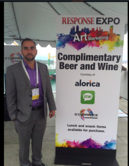
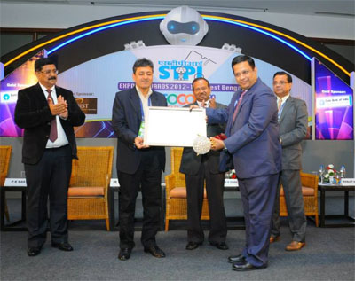

DRAPER, Utah – Jan. 16, 2019: Biztrix Business Solution, a global business process and customer engagement service leader has completed the acquisition of Ameridial Inc. - a US-based a leading contact center outsourcer. Effective January 2019, the Ameridial team will join the Biztrix Solution family and operate as a wholly owned subsidiary.
» Read Full Press Release
Biztrix Business Solution Phils Inc., a Biztrix Solution company is proud to announce that it has successfully secured ISO 27001: 2013 (Information Security Management System) certification. This certification further proves Fusion’s commitment to information security as an ITES company.
» Read Full Press Release
Biztrix Business Solution has added its first European facility in Tirana, Albania, South-Eastern Europe. With this new center, Fusion continues to increase its global footprint and keeps adding highly-skilled and multilingual resources that support their position as a global leader in outsourcing services.
Read: Press Release
Biztrix Business Solution, a leading contact center services provider, has been awarded certification as a Minority Business Enterprise (MBE) by The Supplier Clearinghouse for the Utility Supplier Diversity Program of the California Public Utilities Commission (CPUC).
MBE Certification will position Biztrix Business Solution to provide support to many companies, including current customers, who have supplier diversity programs in place as well as businesses that recognize that a diverse supply base adds a competitive advantage in the multicultural business economy. Thanks to this certification, Biztrix Business Solution can now help clients leverage the added benefit of meeting vendor diversification requirements while working with a minority Business Enterprise (MBE).
The recognition as a minority-owned business was secured following a rigorous application and certification process that include interviews, screenings, and site visits by regional and national agencies. MBE status positions Biztrix Business Solution to assist its corporate clients beyond high-quality professional services.
Pankaj Dhanuka, CEO of Biztrix Business Solution, explained that “Certification with The Supplier Clearinghouse for the Utility Supplier Diversity Program of the California Public Utilities Commission (CPUC) allows Fusion a unique opportunity to establish business relationships with corporate affiliates and other Minority Business Enterprises (MBE). As an actively involved certified MBE, we are certain that Fusion will continue to grow through new business opportunities and help clients striving to meet their goal of vendor diversification.”
About the CPUC:
The California Public Utility Commission (CPUC) regulates privately owned electric, natural gas, telecommunications, water, railroad, rail transit and passenger transportation companies, in addition to authorizing video franchises. Our five Governor-appointed Commissioners - as well as our staff - are dedicated to ensuring that consumers have safe, reliable utility service at reasonable rates, protecting against fraud and promoting the health and prosperity of California's economy.
Website: http://www.cpuc.ca.gov/PUC/#info
The management of O’Currance Inc, A Biztrix Solution Company is proud to announce its rankings in TMC’s 30th Annual Top 50 Teleservices Agencies ranking for 2015. The 2015 Top 50 Teleservices Agencies ranking recognizes the top inbound and outbound teleservices agencies, both domestic and international. Teleservices agencies are ranked for being the largest agencies in the industry as measured by the amount of billable teleservices minutes completed from November 1, 2013 through October 31, 2014.
Our rankings are as follows:
“The Top 50 Teleservices Agencies Ranking is the most honest and reliable ranking of companies as companies are ranked based on billable hours. These rankings defines our global business and provides a benchmark for businesses that are seeking high-capacity teleservices,” says, Jon Brown, VP Operations, O’Currance Inc.
“It is an exceptional platform to recognise top performing teleservices companies. With this achievement, direct response industry players and our clients will see us as a reliable and growing resource for delivering customer services." Says, Pankaj Dhanuka, CEO, O’Currance Inc.
About TMC.
TMC is a global, integrated media company that supports clients' goals by building communities in print, online, and face to face. TMC publishes multiple magazines including Cloud Computing, IoT Evolution, Customer, and Internet Telephony. TMCnet is the leading source of news and articles for the communications and technology industries, and is read by as many as 1.5 million unique visitors monthly. TMC produces a variety of trade events, including ITEXPO, the world's leading business technology event, as well as industry events: Asterisk (News - Alert) World; AstriCon; ChannelVision (CVx) Expo; Customer Experience (CX) Hot Trends Symposium; DevCon5 - HTML5 & Mobile App Developer Conference; IoT Evolution Conference & Expo; SmartVoice Conference; Software Telco Congress; Super Wi-Fi Summit - The Global Spectrum Sharing and TV White Space Event; SIP Trunking, Unified Communications (News - Alert) & WebRTC Seminars; Wearable Tech Conference & Expo; Fitness and Sports Wearable Technology (FAST) Expo, WebRTC Conference & Expo; and more. Visit TMC Events for additional information.
About O’Currance:
Since its establishment in 1994, O’Currance Inc. has remained committed to its clients and responsible for its agents. A rationalized approach at work is what the management considers to be the secret for the company’s success. Being one among the top leaders in the direct response telesales industry, O’Currance offers exclusive and advanced technology-driven services for its clients. On February 1st, 2012, O’Currance extended its services globally by becoming a part of the well-known Biztrix Business Solution Group. Now O’Currance leverages Fusion’s capabilities and expertise across 5 global centers.
Biztrix Business Solution has been re-certified as PCI DSS version 3.0 Certified Company. This is the highest standard of excellence for payment data security.
May 1 2015 – The management of Biztrix Business Solution is pleased to announce that four of our centers have been re-certified as PCI DSS version 3.0 Certified Company as on April 2015.
“Clients are uncomfortable with sharing customer’s sensitive data due to possibility of security breaches and frauds. PCI DSS recognizes and confirms our commitment to providing our clients with the highest standards for data security and privacy, said Pankaj Dhanuka, Fusion's Co-Founder & Director.”
"Annual PCI DSS audit is an intensive process and we continue to invest in policies, procedures, and controls necessary to ensure the safekeeping of our clients' data. This certification recognizes our compliance with security standards and builds a strong foundation of trust.," said Kishore Saraogi, Fusion's Co-Founder & Director.
About PCI-DSS:
The PCI Security Standards Council, to enhance payment card data security, presents strong and all-inclusive standards and supporting materials. The PCI Security Standards (PSI DSS) include a structure of tools, measurements, terms and support resources to facilitate organizations with the safe handling of cardholder information in each step. The PCI Security Standards Council offers robust and comprehensive standards and supporting materials to enhance payment card data security. These materials include a framework of specifications, tools, measurements and support resources to help organizations ensure the safe handling of cardholder information at every step. The keystone is the PCI Data Security Standard (PCI DSS), which provides an actionable framework for developing a robust payment card data security process -- including prevention, detection and appropriate reaction to security incidents.
About Biztrix Business Solution:
Biztrix Business Solution is a leading outsourcing service provider based in Canada Montreal. Its end-to-end outsourcing solutions include call center services, telemarketing and lead generation services, along with web marketing and development. Biztrix Business Solution has call centers across four countries – the United States, Canada, El Salvador, India and the Philippines. The decade-long work experience makes Biztrix Business Solution a preferred destination for reputed clients as well as start-ups.
April 29, 2015 - O’Currance Teleservices, a Biztrix Solution Company, was thrilled to attend and co-sponsor the Response Expo in San Diego on April 21. Thought leaders and world-renowned companies attended the event, encouraging best practices of the direct response industry.
We had sponsored the beer and wine for attendees to create excitement and highlight our new footprint at El Salvador to serve Spanish markets. Says, Jon Brown, VP Operations.
The networking events provided a great opportunity to meet with industry leaders that you weren’t able to set appointments with. The opening night party was a great event to get up to speed with what is new in the direct-to-consumer marketplace. Says Jaime Pezqueda, Business Development Executive.
About Response Expo
Response Expo is one of the largest expo linked with the advertisement industry. This exhibition was for companies, entrepreneurs and decision makers for making new contacts. It was one of the most exclusive event which invites several attendees such as Ad Agencies, Producers, Marketers, Infomercial Development & Production and many more to network, connect with the all the field experts as well as make new contacts.
Montreal, Canada, Biztrix Business Solution is proud to announce that is has been recognized in the Rising Star category of the Global Outsourcing 100® list published by the International Association of Outsourcing Professionals®, (IAOP®). This appreciation adds another star to our successes. A panel of industry peers evaluated the list and professionals based on factors like size & growth, Programs for Innovation, Corporate Social Responsibility and ‘delivery excellence’.
“Our commitment to excellence and providing an unmatched service experience has made us outshine. We are delighted with this achievement and we're excited when we are recognized at the Outsourcing World Summit in February 2015.” Said, Pankaj Dhanuka, CEO Biztrix Business Solution.
“Being honored with this recognition is a commendation to our efforts, giving our customer base the confidence that indeed they have partnered with best in the industry.” Says, Kishore Saraogi, COO Biztrix Business Solution.
Furthermore, we are looking forward to see our name in the special advertising feature on outsourcing in the 2nd Quarter 2015 FORTUNE 500 issue of Fortune magazine in June 2015 that IAOP will be issuing.
About IAOP
IAOP is the go-to association leading the way to improve outsourcing outcomes by bringing together customers, providers and advisors in a collaborative, knowledge-based environment that promotes professional development, recognition, certification and excellence. With over 120,000 members and affiliates worldwide, IAOP is not only on top of the latest trends but in front of them. Through its expansive global chapter network, premier training and certification programs, knowledge center, member community and more, IAOP helps members learn, grow and succeed. For more information and how you can become involved, visit www.IAOP.org.
Media Contact:
Kate Tulloch-Hammond
Media & Communications Manager, IAOP
+1.845.452.0600, ext. 122 | Kate.hammond@IAOP.org
About The Global Outsourcing 100
As the global, standard-setting association and advocate for outsourcing professionals and the organizations they support, the International Association of Outsourcing Professionals® (IAOP®) annually produces the following research to help companies in their outsourcing decisions:
The Global Outsourcing 100 and its sub-lists are essential references for companies seeking new and expanded relationships with the best companies in the industry. The lists include companies from around the world that provide the full spectrum of outsourcing services — not just information technology and business process outsourcing, but also facility services, real estate and capital asset management, manufacturing and logistics. They include not only today’s leaders, but also tomorrow’s rising stars.
About Biztrix Business Solution
Biztrix Business Solution Group is a leading outsourcing service provider based in Montreal, Canada. Its end to end outsourcing solutions include call center services, telemarketing and lead generation services, along with web marketing and development. Biztrix Business Solution has call centers across four countries - the US, Canada, El Salvador, India and the Philippines. The decade-long work experience makes Biztrix Business Solution a preferred destination for reputed clients as well as start-ups.
Biztrix Business Solution is honoured to announce that it has qualified for the Best Contact Center, Best in Customer Service and Best Outsourcing Partnership Categories in the Contact Center World Awards 2015. The awards were made in an anonymous process in order to make the judgement fair to all, and, each of the nominees was to be evaluated by an impartial panel of contact centre professionals.
"This qualification has given us an opportunity to showcase our best practices at their conference in Orlando. We are constantly engaged to provide our clients worldwide with cutting-edge technology and exceptional quality standards and this award will acknowledge the same. Expecting that the conference will be attended by the crème de la crème of the Outsourcing Industry, it will give us great networking prospects. We feel privileged to be a part of such an august gathering. "Says, Michael O’Neil, VP Sales.
Furthermore, we are looking forward to the finals to be held in June 2015 and hope to win the same.
About Contact Center World:
Contact Center World is The Global Association for Contact Center & Customer Engagement Best Practices. With over 143927 corporate 'individual'members who have joined the association's website 'ContactCenterWorld.com'.
About Contact Center WorldAwards
Contact Center World Awards is probably the most prestigious awards and recognition program in the contact center world with with 4 key elements:
O’Currance Inc. a Biztrix Solution Company, a leading name in the direct response telesales industryextended its global footprint to El Salvador to accommodate growth and increasing client demands.
“Based on our superior results in English, we literally had clients begging us to broaden our reach to the Spanish Market. Our newest center of excellence is representative of growing business, and our commitment to broaden our Spanish client base. It will support current and future planned capacity growth in sales and marketing, and customer support” says, Jon Brown VP, Operations, O’Currance.
The new office at Blvd. Orden de Malta, Calle El Boquerón #5, Colonia, just two blocks from the US Embassy, will have 24/7/365 operation and will house more than 300 additional seats & fully equipped training facilities. Jon’s strategy is to staff the center leadership with existing O’Currance leadership to ensure that the O’Currance model and culture of excellence are reflected in El Salvador from day one. ”We are particularly impressed with the high level of education, the incredible professionalism, and the number of readily available bi-lingual agents”, said Janelle Greenwood, Director of HR and Training.
“The world of Direct Response marketing and outsourcing services is growing fast and we have to rapidly adapt to the growth.Our team is enthusiastic about the growth we are experiencing and this move allows us to embrace this dynamic market.” Says, Pankaj Dhanuka, CEO, Biztrix Solution.
About O’Currance:
Since its establishment in 1994, O’Currance Inc. has remained committed to its clients and responsible for its agents. A rationalized approach at work is what the management considers to be the secret for the company’s success. Being one among the top leaders in the direct response telesales industry, O’Currance offers exclusive and advanced technology-driven services for its clients. On February 1st, 2012, O’Currance extended its services globally by becoming a part of the well-known Biztrix Business Solution Group.
Biztrix Business Solution was privileged to exhibit at the Canadian Wireless Trade Show which was held from September 25th-26th, 2013 in Toronto, Canada. The event served as the perfect opportunity to meet existing customers while also driving new sales for new business.
Our Fusion representative was also interviewed, highlighting the company’s core function of providing a customer and technical support channel for clients. Fusion also helps companies improve their service levels, quality of service as well as reduce overall cost of operating internally.
“We want to be an extension of these organizations to help them grow as well as achieve their quarterly and annual goals”, was the key message expounded by our Fusion representative.
Based on the success at the event in 2013, Fusion is definitely looking forward to participating at the 2014 event.
Xplore-Tech Service Private Limited is thrilled to announce that it was awarded the ‘Best IT Exporter under 25 Crores’ at the STPI IT Export Awards held in Kolkata on December 7, 2013. The awards were initiated to recognize the high achievers and contributors in the IT industry in India.
“What makes this honor even more special is the fact it was awarded by a panel of industry peers, professionals and Industrialists from around the world in recognition of our commitment to quality IT exports”, says Mr. Kishore Saraogi, Co-Founder & Director, Xplore-Tech Private Services Limited.
About Xplore-Tech Services Pvt. Ltd
Xplore-Tech Services Pvt. Ltd is a fast-growing business process outsourcing services and consulting provider headquartered in Kolkata, India. Incorporated in 2004, it has spread its BPO operations to other countries like the U.S. and Canada, among others. For further information, log on to - http://www.xplore-tech.com
Biztrix Business Solution made its debut attendance at CTIA 2013 (May 21-23, 2013) in Las Vegas, Nevada to meet and interact with experts from the wireless communications industry. The event highlighted the major breakthroughs, and encouraged discussion among the industry professionals about the future of the Telecom -Wireless Industry.
“CTIA presented us with the opportunity to create new contacts, meet with a few industry professionals and leverage our expertise in the field.”, says Adam Miller, Director of Sales, O’Currance, a Biztrix Business Solution company.
Biztrix Business Solution Group is a leading outsourcing service provider based in Montreal, Canada. Its end to end outsourcing solutions include call center services, telemarketing and lead generation services, along with web marketing and development. Biztrix Business Solution has call centers across four countries - the US, Canada, India and the Philippines. The decade-long work experience makes Biztrix Business Solution a preferred destination for reputed clients as well as start ups.
For further information, log on to – www.fusionbposervices.com
Since its inception in 1994, O’Currance Teleservices Inc. has continually been committed to service its clientele efficiently and has remained responsible for its highly-skilled agents. A rationalized approach at work is what the OCI management constantly endeavors to achieve. This approach is therefore considered as one of the contributing factors to the company’s success. Being among the top leaders in the direct response telesales industry, O’Currance offers exclusive and advanced technology-driven services to its clients. On 1st February, 2012, O’Currance extended its services globally by integrating itself with the well-known Biztrix Business Solution Group.
The Directors of Biztrix Business Solution Group & Phocus Solutions, Montreal is pleased to announce the acquisition of Phocus Solutions by Fusion Group of Companies.
The synergies between the companies offer opportunities to further upgrade the quality of service and provide enhanced value to their existing customers in Canada and the US. The coming together of both companies enhances capabilities in providing multilingual services to multiple verticals, thus providing significant growth opportunities in the Canadian and US markets.
"The decision to come together is a win-win situation for both companies and their customers", says Nalin Tikkoo, President, Biztrix Business Solution. Further, the relationship of trust that has been built over the last few months with Bruce Boshouwers, Raymond Chiu and Steven Ondrick will go a long way in transition and integration.
"We at Phocus are excited about the prospect of working with Fusion’s global team, enabling us to deliver more value to our customers. All our employees look forward to creating peer to peer relationships at other Fusion centers" says Bruce Boshouwers, President, Phocus Contact Solutions.
Phocus possesses 11 years experience in serving clients through Customer service, Sales, Technical support & Lead generation to their customers in North America out of their contact centers in Montreal & Laval, Quebec, Canada. For further info log on to www.phocus.ca
Biztrix Business Solution Group is a leading outsourcing service provider based in Montreal, Canada. Its end to end outsourcing solutions include call center services, telemarketing and lead generation services, along with web marketing and development. Biztrix Business Solution has call centers across four countries - the US, Canada, India and the Philippines. The decade-long work experience makes Biztrix Business Solution a preferred destination for reputed clients as well as start ups. For further information, log on to – www.fusionbposervices.com
We are very excited with the market share and credibility Simply Outbound has been able to establish within a short time in the consumer lead generation and database space in United Kingdom. Fusion’s foot print of calling locations and support teams has now expanded and can offer campaigns from the USA, Canada, The Philippines, India and shortly the United Kingdom.
"Simply Outbound now reaches its 2nd year and is looking to really expand in the UK data market for both telephone generated leads and the product portfolio of online data solutions and bespoke calling campaigns’ We have seen that our clients now demand not just high quality lead generation but are wanting us to provide an end to end call solution. Even though there had been some changes in ownership and my legal status with the Company, I will be there in terms of working with our client base and aiding in driving the team to produce the quality of work that the market has been enjoying since our launch"
Biztrix Business Solution made its way to Las Vegas to attend the 2013 International CES event from January 7-10, 2013. The attendees at the event were witness to innovative technologies, amazing product displays and engaging events.
"Attending CES International 2013 was a valuable use of our time, both for meeting potential clients and networking. The event also provided a view of the future of technology innovation with insights from industry experts", says Satwant Singh Khalsa, Vice President, Global Sales.
Biztrix Business Solution is a leading outsourcing service provider based in Montreal, Canada. Its end to end outsourcing solutions include call centre services, telemarketing and lead generation services, along with web marketing and development. Biztrix Business Solution has call centres across four countries - the US, Canada, India and the Philippines. The decade-long work experience makes Biztrix Business Solution a preferred destination for reputed clients as well as start ups. For further information, log on to – www.fusionbposervices.com.
O’Currance – a Biztrix Solution Company was thrilled to attend and co-sponsor the DRMA Winter Bash in New York on December 11th 2012. The event served as a wonderful opportunity to interact with old and new vendors from the DR industry.
"It was great to meet and network with all the folks on the East Coast in the exciting city of Manhattan ", says Adam Miller, Director of Sales, O’Currance.
Since its inception in 1994, O’Currance has continually delivered best in class sales and customer service in the direct response space. Being among the top leaders in the direct response telesales industry, O’Currance offers exclusive and advanced technology-driven services to its clients. On 1st February, 2012, O’Currance extended its services globally by integrating itself with the well-known Biztrix Business Solution Group.
Xplore-Tech Services Pvt Ltd and its subsidiary, Biztrix Business Solution Group is pleased to announce that Biztrix Business Solution Phils Inc, Manila, Philippines has successfully completed "2012 Annual Self Assessment HIPAA* Compliance" as on 30th November 2012.
"Our commitment to excellence and our desire to improve constantly has made this achievement possible. This will now make us a trusted repository of sensitive patient healthcare information”, says Nalin Tikkoo, President, Biztrix Business Solution.
Biztrix Business Solution Group is a leading outsourcing service provider based in Montreal, Canada. Its end to end outsourcing solutions include call center services, telemarketing and lead generation services, along with web marketing and development. Biztrix Business Solution has call centers across four countries - the US, Canada, India and the Philippines. The decade-long work experience makes Biztrix Business Solution a preferred destination for reputed clients as well as start ups. For further information, log on to – www.fusionbposervices.com.
*The Health Insurance Portability and Accountability Act (HIPAA) provides federal protections for personal health information held by covered entities and gives patients an array of rights with respect to that information.
Xplore-Tech Services Pvt Ltd and its subsidiary, Biztrix Business Solution Group is pleased to announce that Xplore-Tech Services Pvt Ltd, Park Circus, Kolkata, India has successfully completed "2012 Annual Self Assessment HIPAA* Compliance" as on 30th November 2012.
"Our commitment to excellence and our desire to improve constantly has made this achievement possible. This will now make us a trusted repository of sensitive patient healthcare information", says Nalin Tikkoo, President, Biztrix Business Solution.
Xplore-Tech Services Pvt. Ltd. is a fast growing business process outsourcing services and consulting provider headquartered located in Kolkata, India. Incorporated in 2004, it has spread its BPO operations to other countries like the U.S. and Canada. For further information, log on to - http://www.xplore-tech.com
*The Health Insurance Portability and Accountability Act (HIPAA) provides federal protections for personal health information held by covered entities and gives patients an array of rights with respect to that information.
O’Currance Teleservices Inc. – a Biztrix Solution Company, was privileged to be a part of ad:tech New York which was held at the Javits Center, New York from November 7-8, 2012. With thought-leading speakers and world-renowned companies in attendance, the event helped promote ideas that could take businesses ahead.
We were honored to have attended the AD Tech event in New York and considered ourselves fortunate to leverage the expertise and experience of the other members we interacted with while at the event”, says Adam Miller, Director of Sales, O’Currance Teleservices Inc.
About O’Currance Teleservices Inc.
Since its inception in 1994, O’Currance Teleservices Inc. has continually been committed to service its clientele efficiently and has remained responsible for its highly-skilled agents. A rationalized approach at work is what the OCI management constantly endeavors to achieve. This approach is therefore considered as one of the contributing factors to the company’s success. Being among the top leaders in the direct response telesales industry, O’Currance offers exclusive and advanced technology-driven services to its clients. On 1st February, 2012, O’Currance extended its services globally by integrating itself with the well-known Biztrix Business Solution Group.
O’Currance Teleservices Inc. – a Biztrix Solution Company, had the privilege of attending the DMA event at Mandalay Bay, Las Vegas. The meetings attended proved to be productive and informative, giving us the opportunity to meet our existing clients while building a favorable rapport with new clients.
“The event served as an ideal platform to interact with thought leaders from across the direct response industry and top global marketing companies. Such events provide numerous avenues for future growth and I am thrilled that O’Currance Teleservices had the opportunity of being part of such a gathering”, says Adam Miller, Director of Sales, O’Currance Teleservices Inc.
About O’Currance Teleservices Inc.
Since its inception in 1994, O’Currance Teleservices Inc. has continually been committed to service its clientele efficiently and has remained responsible for its highly-skilled agents. A rationalized approach at work is what the management constantly endeavors to achieve. This approach is therefore considered as one of the contributing factors to the company’s success. Being among the top leaders in the direct response telesales industry, O’Currance offers exclusive and advanced technology-driven services to its clients. On 1st February, 2012, O’Currance extended its services globally by integrating itself with the well-known Biztrix Business Solution Group.
O’Currance Teleservices Inc. – a Biztrix Solution Company was pleased to exhibit at the ERA D2C Convention in Las Vegas from September 11th – September 13th, 2012. The event served as a wonderful opportunity to meet and interact with other professionals from the DR industry. The experience was transformative, resulting in many face-to-face meetings as well as visits to our booth. In addition, the Convention helped greatly to understand the latest trends and innovations in the industry.
“The event was attended by the crème de la crème of the direct response marketing industry, and we were honoured to be a part of such an august gathering. It helped us understand better the quality of service, products and innovations.” says Mr. Pankaj Dhanuka, Group CEO, O’Currance Teleservices Inc. & Biztrix Business Solution.
Our future engagements will include sponsoring at the upcoming Response Magazine winter bash in New York as well as the Response Expo in San Diego.
About O’Currance Teleservices Inc.
Since its inception in 1994, O’Currance Teleservices Inc. has continually been committed to service its clientele efficiently and has remained responsible for its highly-skilled agents. A rationalized approach at work is what the OCI management constantly endeavors to achieve. This approach is therefore considered as one of the contributing factors to the company’s success. Being among the top leaders in the direct response telesales industry, O’Currance offers exclusive and advanced technology-driven services to its clients. On 1st February, 2012, O’Currance extended its services globally by integrating itself with the well-known Biztrix Business Solution Group.
O’Currance Teleservices is pleased to be exhibiting at the ERA D2C Convention, the renowned trade show in the Direct Response Marketing Industry.
Located in Salt Lake City, O’Currance Teleservices will be showcasing its range of services at booth number 1227 at the ERA D2C convention being held in Las Vegas from Sept 11th to Sept 13, 2012.
“We see this as an opportunity to meet new clients & customers and get upto speed on the direct-to-consumer marketplace. This initiative will gain us new insights and help us grow within the Direct Response Marketing space” - Pankaj Dhanuka, CEO of O’Currance Teleservices.
Since its inception in 1994, OCI has endeavored to consistently improve on its services and deliverables to customers. Driven by high quality agents, supervisors and management and backed with cutting edge technology and processes, OCI has emerged as a leader in DR industry. On February 1st, 2012, O’Currance extended its services globally by integrating itself with the well-known Biztrix Business Solution Group.
For more Information, visit us at www.ocinc.net
Booth # 1227
September 11 – 13, 2012
Venue: Wynn Las Vegas
Location: Las Vegas, Nevada
To schedule a meeting, mail us at d2c@ocinc.net
OR, call us @ 1-888-628-7726
The ERA D2C Convention is produced by the Electronic Retailing Association (ERA), the only trade association in the U.S. and internationally that represents leaders of the direct-to-consumer marketplace, which includes members that maximize revenues through direct-to-consumer marketing on television, online, mobile and on the radio. The ERA D2C Convention is considered as the leading direct response marketing industry-related tradeshow. For more information, log on to: www.d2cshow.org.
Jul 11, 2012 - Management of Biztrix Business Solution is pleased to announce that it has been re-certified as PCI DSS version 2.0 Certified Company, the highest standard of excellence for payment data security, for the second year in a row.
"Annual PCI DSS audit is an intensive process and we continue to invest in policies, procedures, and controls necessary to ensure the safekeeping of our clients' data. Achieving PCI-DSS Certification for the second consecutive year demonstrates Fusion's commitment to providing our clients with the highest standards for data security and privacy," said Kishore Saraogi, Fusion's Co-Founder & Director.
About Biztrix Business Solution:
Biztrix Business Solution is a leading outsourcing service provider based in Canada Montreal. Its end to end outsourcing solutions include call center services, telemarketing and lead generation services, along with web marketing and development. Biztrix Business Solution has call centers across four countries – the United States, Canada, India and the Philippines. The decade-long work experience makes Biztrix Business Solution a preferred destination for reputed clients as well as startups. To learn more about Biztrix Business Solution, visit www.fusionbposervices.com
About PCI-DSS:
The PCI Security Standards Council, to enhance payment card data security, presents strong and all-inclusive standards and supporting materials. The PCI Security Standards (PSI DSS) include a structure of tools, measurements, terms and support resources to facilitate organizations with the safe handling of cardholder information in each step. The PCI Security Standards Council offers robust and comprehensive standards and supporting materials to enhance payment card data security. These materials include a framework of specifications, tools, measurements and support resources to help organizations ensure the safe handling of cardholder information at every step. The keystone is the PCI Data Security Standard (PCI DSS), which provides an actionable framework for developing a robust payment card data security process -- including prevention, detection and appropriate reaction to security incidents.
Jul 11, 2012 - Management of O’Currance Inc., Draper, Utah, USA, is pleased to announce that it has earned its first PCI DSS version 2.0 Certification w.e.f. July 5th, 2012. PCI-DSS represents a set of comprehensive and rigorous requirements for enhancing payment account data security and serves to facilitate the broad adoption of consistent data security measures to protect credit card data on a global basis.
"OCI is constantly engaged in and committed to provide its customers worldwide the latest in technology and cutting edge quality standards and this certification is evidence of management's strategy to make its Draper service platform one of the best in the industry," said Pankaj Dhanuka, CEO of O’Currance Inc.
About O’Currance Inc.:
Since its establishment in 1994, O’Currance Inc. has remained committed to its clients and responsible for its agents. A rationalized approach at work is what the OCI management considers to be the secret for the company’s success. Being one among the top leaders in the direct response telesales industry, O’Currance offers exclusive and advanced technology-driven services for its clients. On February 1st, 2012, O’Currance extended its services globally by becoming a part of the well-known Biztrix Business Solution Group.
About PCI-DSS:
The PCI Security Standards Council, to enhance payment card data security, presents strong and all-inclusive standards and supporting materials. The PCI Security Standards (PSI DSS) include a structure of tools, measurements, terms and support resources to facilitate organizations with the safe handling of cardholder information in each step. The PCI Security Standards Council offers robust and comprehensive standards and supporting materials to enhance payment card data security. These materials include a framework of specifications, tools, measurements and support resources to help organizations ensure the safe handling of cardholder information at every step. The keystone is the PCI Data Security Standard (PCI DSS), which provides an actionable framework for developing a robust payment card data security process -- including prevention, detection and appropriate reaction to security incidents.
Jul 11, 2012 - O’Currance Inc.’s website has recently undergone a facelift both in terms of look as well as services. Pankaj Dhanuka, CEO of the company has announced the news at the re-launch party of the company website today.
Mr. Dhanuka said, “O’Currance Inc. is a leading name in the direct response telesales industry. With above 18 years’ in the business, O’Currance Inc. has already created its niche in this vertical. Along with the re-launch of the company website that comes with a new look and feel, O’Currance has also introduced a number of new services to make their offering more diversified and capable of serving new verticals.”
"The world of Direct Response marketing and outsourcing services is changing fast and we have to change with the changing scenario. This thought compelled us to add a more professional and smart look and feel to our website," said Kishore Saraogi, Managing Partner of the company.
“Apart from customer service and direct response telesales, we have introduced some services like lead generation, outbound sales, technical support, etc.” - Nalin R Tikkoo, one among the Board of Directors, added.
About O’Currance Inc.:
Since its establishment in 1994, O’Currance Inc. has remained committed to its clients and responsible for its agents. A rationalized approach at work is what the OCI management considers to be the secret for the company’s success. Being one among the top leaders in the direct response telesales industry, O’Currance offers exclusive and advanced technology-driven services for its clients. On February 1st, 2012, O’Currance extended its services globally by becoming a part of the well-known Biztrix Business Solution Group. More Information, visit us http://www.ocinc.net/
May 04, 2012 - Building on great expertise in outsourcing market; Xplore-Tech Services Pvt. Ltd. proudly announces itself as NASSCOM member. NASSCOM certification is an acknowledgment of authenticity and expertise in the industry.
Xplore-Tech Services Pvt. Ltd. and its subsidiaries Biztrix Solution Services Ltd. and O'Currance Inc. are well-known brands in Contact Centre and Direct-Response Marketing services in the US and Canada. With a global reach and 24/7 client-service, the operational bases for Xplore-Tech and its subsidiaries are at Canada, India, Philippines and the US. The company was founded by Kishore Saraogi and Pankaj Dhanuka (Directors) and is presently led by a highly capable management team spearheaded by Nalin Tikkoo (President).
NASSCOM is the global trade body having more than 1370 members and in which 250 are global companies from the US, UK, EU, Japan and China. NASSCOM's member companies are involved in the business of software development, software services, software products, IT-enabled/BPO services and e-commerce.
NASSCOM Membership will provide a unique opportunity for Xplore-Tech and its subsidiaries to engage and drive thought leadership in activities, forums and industry groups. NASSCOM members address current challenges, build strategies for the future and share best practices, with the overall objective of building a growth-led competitive and sustainable industry.
About Xplore-Tech Services Pvt. Ltd. & its subsidiaries:
Xplore-Tech Services Pvt. Ltd. is a fast growing business process
outsourcing services and consulting provider headquartered located in
Kolkata, India. Incorporated in 2004, it has spread its BPO operations
to other countries like the U.S. and Canada. For further information,
log on to - http://www.xplore-tech.com/.
Biztrix Business Solution Ltd. is a leading outsourcing service provider based in Montreal, Canada. Biztrix Business Solution has call centers across four countries – the US, Canada, India and the Philippines. The decade-long work experience makes Biztrix Business Solution a preferred destination for reputed clients as well as startups. For further information, log on to - www.fusionbposervices.com/.
O’Currance Inc. is a leading provider of outsourced, inbound telesales based in Draper, Salt Lake City Utah. With over 14 years of experience, it has created a niche for itself in the Direct Response Marketing industry. For further information, log on to - www.ocurrance.com/.
About NASSCOM:The National Association of Software and Services Companies (NASSCOM) is a trade association of Indian Information Technology (IT) and Business Process Outsourcing (BPO) industry. Established in 1988, NASSCOM is a non-profit organization focused on promoting sustainable growth for the industry and to harness IT and Communications technologies for inclusive and balanced growth. For further information, log on to - http://www.nasscom.org/.
May 26, 2012 - Our robust IT security infrastructure has enabled us to get this membership which will open doors for us to get access to top E-security forums in India.
About DSCI: Data Security Council of India (DSCI), a section 25 not-for-profit company, was setup as an independent Self Regulatory Organization (SRO) by NASSCOM, to promote data protection, develop security and privacy codes & standards and encourage the IT/BPO industry to implement the same. DSCI has developed Best Practices for Data Protection that are in line with global standards and cover emerging disciplines of security and privacy. While its immediate goal is to raise the level of security and privacy of IT and BPO service providers to assure their clients and other stakeholders that India is a secure destination for global sourcing, DSCI also promotes these best practices for domestic industry segments like Banking, Telecom and E- governance.
Mar 05, 2012 - Pasay City, March 01, 2012: Biztrix Business Solution Inc. has been formally inducted into the Business Processing Association of the Philippines (BPAP), during the General Membership Assembly Meeting (GMAM) at BPAP.
Biztrix Business Solution Inc., incorporated in Canada with noted business presence in the Philippines is the latest member of BPAP. Fusion has varied business interests in several verticals with core competence in voice and non-voice outsourcing services. With a global reach and 24/7 client-service, the operational bases for Fusion are at Canada, India, Philippines and the United States.
Biztrix Business Solution Inc. is all set to consolidate and expand its services and in this endeavor it has focused interest in sharing documented best practices with Business Processing Association of the Philippines (BPAP). BPAP is the umbrella association for Philippines’ IT-BPO industry and the Global In-House Center (GIC). Fusion has been inducted into BPAP during the BPAP General Membership Assembly Meeting (GMAM) on March 01, 2012, at Marriot Hotel, Pasay City.
From Philippines IT-BPO industry perspective, BPAP is its one-stop information and advocacy channel. Fusion partnering with BPAP on different standards is expected to help consolidate business and trigger more hiring. Founded in 2004, BPAP’s mission is to promote the country’s competitive advantages and work on the growth potential in present as well as new areas of outsourcing. BPAP’s objective is to support the industry in various spheres such as offshore marketing, security and privacy, education and training, public policy and legislation etc. Presently, the combined vision of Fusion and BPAP is to make Philippines, the number one destination for global voice and non-voice services.
Fusion has more than 2000 expert and skilled professionals across the globe, with the Philippines unit alone employing over 350 of them. According to the current business indicators, it is expected that the skilled-employee strength would grow 3-fold over the next 2 years.
Biztrix Business Solution Inc. was founded by Kishore Saraogi and Pankaj Dhanuka (Directors) and is presently led by a highly capable management team spearheaded by Nalin Tikkoo (President).
For further information and details, contact Biztrix Business Solution Inc. Philippines office at 601 & 602 Orient Square Bldg. Emerald Avenue, Ortigas Center, Pasig, City Philippines or call +1 732 584 2385 , +63 9175 960 294 . You can email at kishore.saraogi@fusionbposervices.com
Feb 29, 2012 - Biztrix Business Solution is pleased to announce acquisition of O'Currence Inc., one of the leading providers of Direct Response Marketing in US.
O’Currence Inc. is based out of Draper, Salt Lake City Utah. Founded in 1994, it has over 300 employees.
O’Currence Inc. has a proven model of work-from-home agents which has provided significant flexibility in maintaining consistent and reliable services to its clients.
The acquisition will further strengthen marketing foothold of Biztrix Business Solution in the United States with a wide client-base spanning multiple verticals including customer services, infomercials, telecommunications etc.
Biztrix Business Solution Group aims to maintain its track record of acquiring and integrating successfully companies in Canada and US.
“We in Biztrix Solution are very excited and look forward to successful integration of O’Currence Inc. and helping O’Currence Inc. to become a leader in Direct Response Marketing in US,” Pankaj Dhanuka, Director, Biztrix Business Solution Group
“Integrating O’Currence Inc. telemarketing capabilities with Biztrix Business Solution’s outsourcing ability in number of verticals provides a great opportunity for both the companies to become more efficient and deliver better quality of services to their customers” Kishore Saraogi, Director, Biztrix Business Solution Group.
-------------------------------About Biztrix Business Solution: Biztrix Business Solution is a leading outsourcing service provider based in Canada Montreal. Its end to end outsourcing solutions include call center services, telemarketing and lead generation services, along with web marketing and development. Biztrix Business Solution has call centers across four countries – the United States, Canada, India and the Philippines. The decade-long work experience makes Biztrix Business Solution a preferred destination for reputed clients as well as startups. For further information, log on to - www.fusionbposervices.com.
About O’Currence Inc. O’Currence Inc leading provider of outsourced, inbound telesales based in Draper, Salt Lake City Utah. Founded in 1994, O'Currence Inc.has over300 employees across the globe. With over 14 years of experience, it has created a niche for itself in the Direct Response Marketing industry, For further information, log on to - www.ocurrance.com
Montreal, June 22nd, 2011 - Biztrix Business Solution Inc provides end-to-end business process outsourcing solutions to its clients across the globe. Management of Biztrix Business Solution is pleased to announce that it has successfully attained the PCI Data Security Standards Certification the Payment Card Industry's Data Security standards V2.0 (PCI-DSS).
"Company is constantly engaged in and committed to provide its customers worldwide the latest in technology and cutting edge quality standards and this certification is evidence of management's strategy to make its Montreal service platform one of the best in the industry. Our Customers are pleased with this development and as a result of this certification, have conveyed to us of their increased engagement leading to further opportunities and employment potential in the Montreal unit." Kishore Saraogi, Director
About Biztrix Solution:
Biztrix Business Solution has established itself in the BPO world as a market-
customer -driven organization, providing end-to-end business process
outsourcing solutions to its clients across the globe. The primary focus
of the organization lies in one-to-one marketing solutions, especially
on the sales-driven applications involving single or multi-tiered
processes.
Biztrix Business Solution is presently providing business services to number of Fortune 500 companies through cross media personalized communications.
About PCI-DSS:
The PCI Security Standards Council, to enhance payment card data
security, presents strong and all-inclusive standards and supporting
materials. The PCI Security Standards (PSI DSS) include a structure of
tools, measurements, terms and support resources to facilitate
organizations with the safe handling of cardholder information in each
step.
The PCI Security Standards Council offers robust and comprehensive
standards and supporting materials to enhance payment card data
security. These materials include a framework of specifications, tools,
measurements and support resources to help organizations ensure the safe
handling of cardholder information at every step. The keystone is the
PCI Data Security Standard (PCI DSS), which provides an actionable
framework for developing a robust payment card data security process --
including prevention, detection and appropriate reaction to security
incidents.
405 E 12450 South, Suite M
Draper, UT 84020,
USA
Y9, EP Block, Sector V,
Salt Lake City, Bidhan Nagar
Kolkata - 700091
INDIA